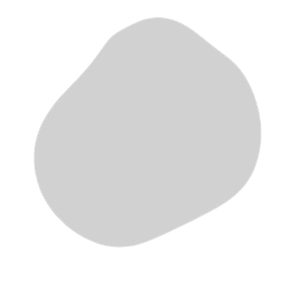
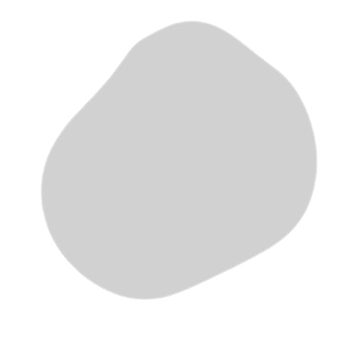

Anish Kr. Sinha is an Indian UI/UX Designer & Front End Developer with a passion for designing beautiful and functional user experiences. Typically, he’s Driven & permanently Curious. He’s obsessed with designing things and even more obsessed with designing cool & clean stuff for the web and mobile. He has been in the business of creating since he hung his first painting on the wall when he was 11.
He holds a bachelor's degree in Computer Applications. During his graduation, he has been actively involved in the web design community for the last 3 years. He has designed websites for small businesses, events, nonprofits, and more. Currently, he’s based in Bihar, India, where he’s working as an independent creative.
His interests, however, extend beyond the web, and he loves helping people with branding and print design. He even loves designing 3D floor plans.
When he’s not designing, he’s probably hanging out with his girlfriend, watching series, sketching, or messing around on something inspired by YouTube tutorials.
 
